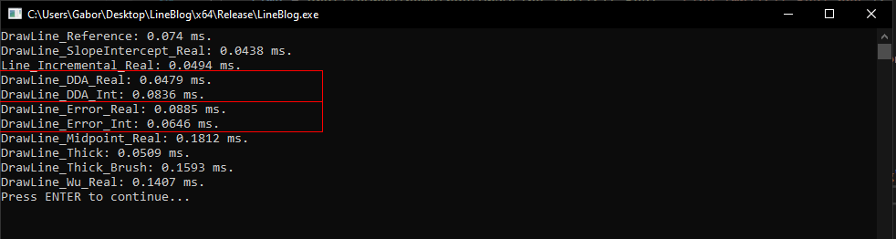

Integer Math
The delta between integer and floating point performance exists, but it's very minor. Depending on the algorithm, using real numbers might even be faster. Handmade Hero Chat 006 - Error-based Drawing Algorithms touches on this briefley. Below is the result of profiling the code covered in thsi blog, the floating point incremental line method is faster than the integer one, while the opposite is true for the error based method.
Accumulating floating point numbers can create precision errors. If you want to draw very large lines, eventually what is drawn might drift off the true line. Accumulating integer lines avoids this problem.
Rational Numbers
To implement an integer only line drawing function, we need to start doing math with fractions instead of float's. So instead of \(0.5 + 0.5 = 1\), we will express this as \(\frac{1}{2} + \frac{1}{2} = \frac{2}{2}\). To draw lines, we only need to know how add two fractions, which is pretty easy so long as they both have the same denominator:
$$ \frac{20}{30} + \frac{20}{30} = \frac{40}{30} = 1\frac{10}{30} $$
To add two fractions with like denominators, add the numerators together. A fraction is greater than 1 if the numerator is greater than the denominator. Here is a demonstration in code:
struct Fraction {
int numerator;
int denominator;
}
struct Number {
int whole;
Fraction part;
}
Number Add(Number a, Number b) {
assert(a.denominator == b.denominator);
Number result;
result.part.denominator = a.denominator;
result.whole = a.whole + b.whole;
// Add Fraction
result.part.numerator = a.part.numerator + b.part.numerator;
// Handle overflow
if (result.part.numerator >= result.part.denominator) {
result.part.numerator -= result.part.denominator;
result.whole += 1;
}
return result;
}
Integer only Incremental line
Let's re-factor the last version of the Line function to use integers instead of floating point numbers. First, we have to break up the x and y floating point variables into three integers (number, numerator, and denominator) each. The denominator for both of the numbers is the steps variable, which is the length of the primary axis. For a simple example, let's consider how we would loop to increment only y.
int steps = max(abs(x1 - x0), abs(y1 - y0));
float yDelta = float(y1 - y0);
float yStep = yDelta / float(steps);
float y = float(y0);
for (int i = 0; i <= steps; ++i) {
y += yStep;
}
To convert this to integer math, create integers for the whole number, numerator and denominator that will represent y. On each iteration, increment the numerator by yDelta. The reason we can add just yDelta instead of yDelta / steps is because the denominator of y is also steps. The numbers have a common denominator, which does not change with addition. If the numerator is greater than the denominator, increase the whole number part of y. If it's less than 0, decrease y.
int steps = max(abs(x1 - x0), abs(y1 - y0));
int yDelta = y1 - y0; // Now an int as well.
int yWhole = y0;
int yNumerator = 0;
int yDenominator = steps;
for (int i = 0; i <= steps; ++i) {
yNumerator += yDelta;
if (yNumerator >= yDenominator) {
yWhole += 1;
yNumerator -= yDenominator;
}
else if (yNumerator < 0) {
yWhole -= 1;
yNumerator += yDenominator;
}
}
Instead of adding \(\Delta Y\) to the numerator, we could add the absolute value of \(\Delta Y\). This would eliminate the need to check if the numerator is less than 0, as it would only ever increase. Next, instead of always adding one to the whole number, we can create a direction variable that goes towards the next point. I've also removed the yDenominator variable, since it's a constant for steps
int steps = max(absXDelta, absYDelta);
int absYDelta = abs(y1 - y0);
int yWhole = y0;
int yNumerator = 0;
int yDir = y0 < y1 ? 1 : -1;
for (int i = 0; i <= steps; ++i) {
yNumerator += absYDelta;
if (yNumerator >= steps) {
y += yDir;
yNumerator -= steps;
}
}
We apply this logic to drawing a line by increasing both the x and y variables and plotting the current pixel. The value of either absXDelta or absYDelta will always be 1.
void Line(Image& image, int x0, int y0, int x1, int y1, Color& val) {
int absXDelta = abs(x1 - x0);
int absYDelta = abs(y1 - y0);
int steps = max(absXDelta, absYDelta);
int xDir = x0 < x1 ? 1 : -1;
int yDir = y0 < y1 ? 1 : -1;
int x = x0, xNumerator = 0;
int y = y0, yNumerator = 0;
for (int i = 0; i <= steps; ++i) {
PutPixel(image, x, y, val);
xNumerator += absXDelta;
if (xNumerator >= steps) {
x += xDir;
xNumerator -= steps;
}
yNumerator += absYDelta;
if (yNumerator >= steps) {
y += yDir;
yNumerator -= steps;
}
}
}